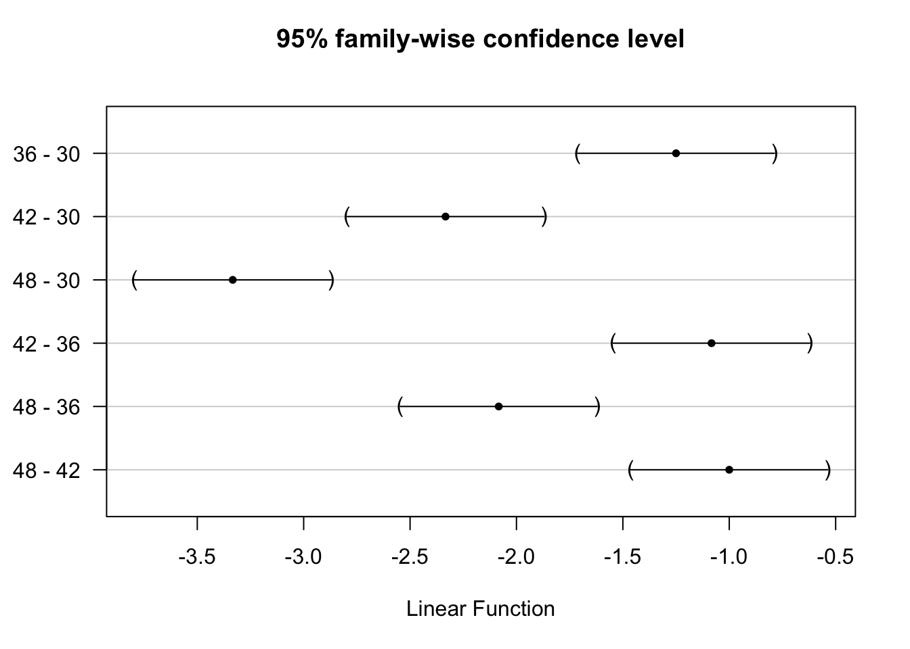

library(FANR6750)
data("meatdata")
str(meatdata)
#> 'data.frame': 72 obs. of 5 variables:
#> $ Wbscore : num 8.25 7.5 4.25 3.5 7.25 6.25 3.5 3.5 6.5 4.5 ...
#> $ tenderizer: chr "C" "C" "C" "C" ...
#> $ time : int 30 36 42 48 30 36 42 48 30 36 ...
#> $ carcass : int 1 1 1 1 1 1 1 1 1 1 ...
#> $ roast : int 1 1 1 1 2 2 2 2 3 3 ...
summary(meatdata)
#> Wbscore tenderizer time carcass roast
#> Min. :2.00 Length:72 Min. :30.0 Min. :1.0 Min. : 1.0
#> 1st Qu.:3.25 Class :character 1st Qu.:34.5 1st Qu.:2.0 1st Qu.: 5.0
#> Median :4.25 Mode :character Median :39.0 Median :3.5 Median : 9.5
#> Mean :4.78 Mean :39.0 Mean :3.5 Mean : 9.5
#> 3rd Qu.:6.25 3rd Qu.:43.5 3rd Qu.:5.0 3rd Qu.:14.0
#> Max. :8.25 Max. :48.0 Max. :6.0 Max. :18.0Lab 11: Split plot designs
FANR 6750: Experimental Methods in Forestry and Natural Resources Research
Fall 2026
Lab 10
Nested ANOVA
Random effects
Using lme() and aov()
Today’s topics
Split Plot Design
The additive model
Using aov() and lme()
Exploring interactions
Multiple comparisons
Scenario
Remember from lecture that split-plot designs are used when we apply treatments to two levels of experimental units: whole-units and sub-units. We can conceptualize this as two blocked designs, one nested inside the other.
For example
Ag fields are sprayed with herbicides, and fertilizers are applied to plots within fields
Tenderizer is applied to roasts, and cooking times are applied to cores
In these cases, we’re interested in treatment effects at both levels
The additive model
We can write the split plot model as:
\[\Large y_{ijk} = \mu + \alpha_i + \beta_j + \alpha \beta_{ij} + \gamma_k + \delta_{ik} + \epsilon_{ijk}\] Where:
\(i = 1,...,a\): The whole unit treatment levels
\(j = 1,...,b\): The sub unit treatment levels
\(k = 1,...,c\): The number of blocks
The \(\alpha\)’s and \(\beta\)’s are fixed treatment effects where \(\alpha_i\) represents the treatment applied to the whole unit and \(\beta_j\) represents the treatment applied to the sub unit. Note the interaction.
Because we want our inferences to apply to all whole units (e.g., roasts), \(\delta_{ik}\) is random. Specifically:
\[\Large \delta_{ik} \sim normal(0, \sigma^2_R)\]
We might view block (e.g. carcass) as random too:
\[\Large \gamma_k \sim normal(0, \sigma^2_C)\]
And as always,
\[\Large \epsilon_{ijk} \sim normal(0, \sigma^2)\]
Data example
Below is a classic dataset which comes from a food science study. Six beef carcasses are obtained at random from a meat packaging plant. From the same section on each carcass, three rolled roasts are prepared as nearly alike as possible. Each of the roasts is assigned at random to one of three tenderizing treatments of particular interest: control, vinegar marinade, or papain marinade
After treatment, a coring device is used to make four cores of meat near the center of each roast. The cores are left in place and the three roasts from the same carcass are placed together in a oven and allowed to cook. After 30 minutes, one of the cores is taken at random from each roast, another drawn randomly after 36 minutes, a third at 42 minutes, and the final at 48 minutes
After cooling, the cores are measured for tenderness using the Warner-Bratzler device. The response variable is the WB score for each core.
As we’ve done with other examples, we need to convert each predictor to a factor (in this case, converting to factors is necessary to use the mcp() function, later in the analysis):
meatdata$time <- factor(meatdata$time)
meatdata$carcass <- factor(meatdata$carcass)
meatdata$roast <- factor(meatdata$roast)
meatdata$tenderizer <- factor(meatdata$tenderizer)
What does it mean to treat time as a factor? How would you interpret the results from a model that treated time as a continuous predictor vs a factor?
Notice that all the roast column does is enumerate the tenderizer × carcass combinations (which explains why the corresponding term in the additive model is \(\delta_{ik}\)):
head(meatdata, n=12)
#> Wbscore tenderizer time carcass roast
#> 1 8.25 C 30 1 1
#> 2 7.50 C 36 1 1
#> 3 4.25 C 42 1 1
#> 4 3.50 C 48 1 1
#> 5 7.25 V 30 1 2
#> 6 6.25 V 36 1 2
#> 7 3.50 V 42 1 2
#> 8 3.50 V 48 1 2
#> 9 6.50 P 30 1 3
#> 10 4.50 P 36 1 3
#> 11 3.50 P 42 1 3
#> 12 2.50 P 48 1 3Using aov()
Because only one Error() term is allowed in aov(), we can treat the block effect as fixed:
aov.meat <- aov(Wbscore ~ tenderizer + time + tenderizer:time + carcass + Error(roast), data = meatdata)
summary(aov.meat)
#>
#> Error: roast
#> Df Sum Sq Mean Sq F value Pr(>F)
#> tenderizer 2 20.72 10.36 190.0 1.1e-08 ***
#> carcass 5 3.90 0.78 14.3 0.00028 ***
#> Residuals 10 0.55 0.05
#> ---
#> Signif. codes: 0 '***' 0.001 '**' 0.01 '*' 0.05 '.' 0.1 ' ' 1
#>
#> Error: Within
#> Df Sum Sq Mean Sq F value Pr(>F)
#> time 3 170.1 56.7 656.6 < 2e-16 ***
#> tenderizer:time 6 9.6 1.6 18.5 1.1e-10 ***
#> Residuals 45 3.9 0.1
#> ---
#> Signif. codes: 0 '***' 0.001 '**' 0.01 '*' 0.05 '.' 0.1 ' ' 1Notice how the ANOVA table is split up into the whole unit error and the sub unit error. Which effects does this table tell us about? Are there any that it does not explain?
Using lme()
Using the lme() function, we are able to have multiple random effects in our model. The notation looks slightly different but we are able to essentially replicate our results from aov().
library(nlme)
lme.meat <- lme(Wbscore ~ tenderizer * time,
data = meatdata,
correlation = corCompSymm(), # To make results same as aov()
random = ~1|carcass/roast)The first row of the ANOVA table is for the (Intercept) term, which we can ignore here (hence the [-1,] indexing operation):
anova(lme.meat)[-1,]
#> numDF denDF F-value p-value
#> tenderizer 2 10 190.0 <.0001
#> time 3 45 656.6 <.0001
#> tenderizer:time 6 45 18.5 <.0001Exploring the interaction
Is the time effect significant for each level of tenderizer?
Similar to a few labs ago, we can create subsetted ANOVAs to look at the effect of one variable across multiple levels of another.
lme.meatP <- lme(Wbscore ~ time, data = meatdata,
random = ~1|carcass/roast,
correlation = corCompSymm(),
subset = tenderizer=="P")
anova(lme.meatP, Terms = "time")
#> F-test for: time
#> numDF denDF F-value p-value
#> 1 3 15 126.7 <.0001lme.meatV <- lme(Wbscore ~ time, data = meatdata,
random = ~1|carcass/roast,
correlation = corCompSymm(),
subset = tenderizer=="V")
anova(lme.meatV, Terms = "time")
#> F-test for: time
#> numDF denDF F-value p-value
#> 1 3 15 274.7 <.0001lme.meatC <- lme(Wbscore ~ time, data = meatdata,
random = ~1|carcass/roast,
correlation = corCompSymm(),
subset = tenderizer=="C")
anova(lme.meatC, Terms = "time")
#> F-test for: time
#> numDF denDF F-value p-value
#> 1 3 15 305.7 <.0001Yes it is.
Multiple comparisons using glht() (package multcomp)
library(multcomp)
mcP <- glht(lme.meatP, linfct = mcp(time="Tukey"))
summary(mcP)
#>
#> Simultaneous Tests for General Linear Hypotheses
#>
#> Multiple Comparisons of Means: Tukey Contrasts
#>
#>
#> Fit: lme.formula(fixed = Wbscore ~ time, data = meatdata, random = ~1 |
#> carcass/roast, correlation = corCompSymm(), subset = tenderizer ==
#> "P")
#>
#> Linear Hypotheses:
#> Estimate Std. Error z value Pr(>|z|)
#> 36 - 30 == 0 -1.25 0.18 -6.94 <1e-06 ***
#> 42 - 30 == 0 -2.33 0.18 -12.96 <1e-06 ***
#> 48 - 30 == 0 -3.33 0.18 -18.52 <1e-06 ***
#> 42 - 36 == 0 -1.08 0.18 -6.02 <1e-06 ***
#> 48 - 36 == 0 -2.08 0.18 -11.57 <1e-06 ***
#> 48 - 42 == 0 -1.00 0.18 -5.55 <1e-06 ***
#> ---
#> Signif. codes: 0 '***' 0.001 '**' 0.01 '*' 0.05 '.' 0.1 ' ' 1
#> (Adjusted p values reported -- single-step method)We can also easily plot the differences between cooking times for “P” tenderizer (and for the other 2 levels of tenderizer as well)
plot(mcP)
Assignment
A Nested-and-Crossed Design is similar to a Split-Plot but without the block. Here we have a study where sweet potato yield is measured in response to (\(a=3\)) types of herbicide. Each herbicide is applied to 5 fields. Each field is divided into 4 plots where each plot is treated with one of (\(b=4\)) fertilizers.
The data can be accessed using:
library(FANR6750)
data("yielddata")Conduct the appropriate ANOVA using both the
aov()andlme()functions (1 pt).Give the appropriate additive model (this will be slightly different than the one for the split-plot design, since there is no blocking) and define each term. What are the associated null and alternative hypotheses? (1 pt)
Does the effect of herbicide depend on fertilizer? (1 pt)
Use Tukey’s test to determine which fertilizers differ (1 pt)
At the end of your report, under a header titled “Reflection”, answer the following questions:
On a 1-10 scale, how would you rate your confidence in the topics covered in this lab?
What lingering questions/confusion about these topics do you still have?
Put your answers in an R Markdown report. Your report should include:
A well-formatted ANOVA table (with header) (1 pt); and
A publication-quality plot (or plots) of the estimated effect of herbicide and fertilizer on yield. Because we have not talked in class about estimating SE for this type of study, you can simply create a plot of the point estimates without error bars. The figure should also have a descriptive caption and any aesthetics (color, line type, etc.) should be clearly defined (1 pt)
You may format the report however you like but it should be well-organized, with relevant headers, plain text, and the elements described above.
A few things to remember when creating the document:
Be sure to include your name in the
authorfield of the headerBe sure the output type is set to:
output: html_documentBe sure to set
echo = TRUEin allRchunks so that all code and output is visible in the knitted documentRegularly knit the document as you work to check for errors
See the R Markdown reference sheet for help with creating
Rchunks, equations, tables, etc.If you use AI on any part of your assignment, you must include the full prompt(s) you used and it’s full answer(s) in a separate section titled “AI assistance” at the end of this document.